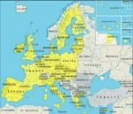

De: La Frikipedia, la enciclopedia extremadamente seria.
De: La Frikipedia, la enciclopedia extremadamente seria. De: La Frikipedia, la enciclopedia extremadamente seria.
| De la serie Países del planeta tierra: | |||||
| Surina...mmm...donuts! | |||||
|---|---|---|---|---|---|
| |||||
| Lema: Nadie sabe quienes somos! | |||||
| Himno: El Chiki Chiki
| |||||
| 
| |||||
| Capital | Paramarimba | ||||
| Mayor ciudad | Tokio | ||||
| Lenguas oficiales | Braile, Silencio, holandés, Teletubbie y SMS | ||||
| Gobierno | Hay Gobierno? | ||||
| Maximo Líder | Mr. Bean | ||||
| Área | Lo que era la Guayaba Holandesa | ||||
| Población | 44 millones y dos más de emigrantes | ||||
| Moneda | Peheta Surinamesa?? | ||||
| Zona horaria | Mr. Bean tiene reloj | ||||
| Dominio Internet | .sr? | ||||
| Código telefónico | ?
| ||||
| Aclaradme todo esto | |||||
País entre la Guyana y la Guayaba Française en un lugar de mierda Sudamérica, donde Dios, y los pájaros saben donde estas. Toda persona que vive en Surinam es un refugiado, un cani, un emo que se quiere suicidar lentamente, un friki perdido, y la lista puede seguir...

Para darte una mejor dirección:
Un poco más sencillo de la llegada
Y es así como sales de Surinam. ツ
Irónicamente aunque estén en Sudamérica, juegan furbo en esa zona de corruptos y perdedores CONCACAF, que es de los países de Centroamérica y el Parlamento Centroamericano.
Es tanta la incapacidad que tienden a copiar de los holandeses y otras culturas, como lo hacen los hondureños.
Los críos se educan solos.
Las escuelas se encuentran pasando la frontera al brazil.
La importan del país mas Fashion, osea Bielorrusia, con un gran acuerdo con el hombre más fashion de allá, Sergioooo!
Todo lo que dice "Hecho en Surinam" está hecho por jalvadoreños, en cambio lo que dice "hecho en Suriname" Si esta hecho en Suriname.
Todas las fábricas holandesas tienen inmigrantes surinameses, pero tu no lo sabías eh?
Hay muchas figuras históticas que nacieron en Surinam, pero se nacionalizaron holandeses.

|
Surinam, Surinam, Surinam, Surinam Surinam, exporta bauxita
|

|
| Extracto del Himno de Surinam. |
| |
|---|
| Bahamas | Barbados | Dominica | Granada | Guyana | Haití | San Cristóbal y ¿Nieves? | San Vicente y las Granadinas | Santa Lucía | Trinidad y Tobago | Uruguay | Venezuela |
Autor(es):